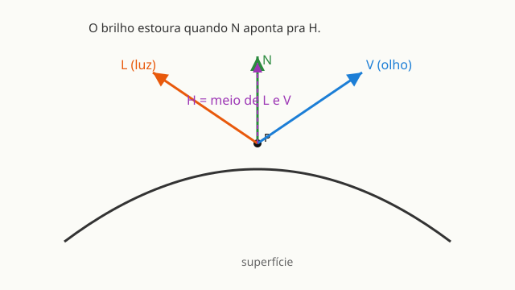

← Mapa do curso · Marco 3 · Módulo 12 de 14
No M10 você acendeu a luz difusa: aquela que espalha igual, que deixa um lado da esfera claro e o outro escuro, mas que não muda dependendo de onde você está olhando. A luz especular é diferente. Ela cria um ponto de brilho — aquele reflexo branco-quente que você vê numa bola de bilhar, numa maçaneta, num copo de água. E esse ponto desliza quando você vira a cabeça. Por que? Porque o brilho especular depende de onde o olho está. Vamos descobrir como calcular isso.
dot(N, L) — normal e direção da luz. Esse cálculo
dependia de onde você estava olhando? Segura a resposta. Agora pense num ponto
brilhante numa bola de bilhar: se você andar em volta da bola, o ponto brilhante acompanha você
ou fica parado? Por que será?
Pra calcular o brilho especular, a GPU precisa saber de onde você está olhando. Isso é o vetor V — a seta que aponta do ponto da superfície até a câmera. É o mesmo tipo de vetor do M8: só uma direção, tamanho 1.
O motor já te entrega a posição da câmera em u_cameraPos (fixa em (0, 0, 3) no
mundo) e a posição do fragmento no mundo em v_worldPos. Então:
vec3 V = normalize(u_cameraPos - v_worldPos);Subtrai: de onde estou menos onde está o ponto. Normaliza: vira direção pura. Simples — é o mesmo raciocínio de qualquer vetor que você fez no M8.
Aqui vem a sacada do Blinn-Phong (o modelo de iluminação que os jogos usaram por décadas): em vez de calcular o reflexo exato da luz, a gente usa o vetor H, o half-vector — a direção exatamente no meio entre L (pra luz) e V (pro olho).
vec3 H = normalize(L + V);Soma as duas setas, normaliza. Pronto: H aponta entre elas. Quando a normal N aponta na mesma direção que H, o brilho estoura — é exatamente o ponto em que a superfície "reflete" a luz pro seu olho. Não precisa entender a derivação; o que importa é a intuição: N perto de H → brilho; N longe de H → sem brilho.
dot desde o M8): se a normal N aponta
quase na direção de H, o dot(N, H) fica alto (perto de 1).
Isso vai deixar o brilho grande ou pequeno naquele ponto? E quando você eleva
esse número a uma potência grande (pow(..., 64.0)), o ponto de brilho cresce ou encolhe?
Segure seu palpite — a receita logo abaixo confirma.
pow(max(dot(N, H), 0.0), dureza).dot(N, H) é o mesmo dot do M8 e M10 — mede o alinhamento entre N e H.max(..., 0.0) corta o negativo, igual ao M10.pow(..., dureza) é o que muda tudo: eleva o resultado a uma potência.cor_base * dif + vec3(1.0) * esp.
A esfera abaixo já tem difusa (do M10) mais o especular novo. O slider dureza do brilho controla o tamanho do ponto branco. O slider direção da luz move a fonte de luz em volta da esfera.
Antes de mexer — preveja: com a dureza em 128, o ponto brilhante vai ser grande ou pequeno? E se você baixar a dureza pra 4, o que acontece com o ponto?
Resposta (antes de testar): ____________________
Agora arraste o slider de dureza dos dois extremos e confira.
u_cameraPos? Não declarei.v_normal e ao v_worldPos que
o motor também fornece.dot(N, H) e o pow ainda estão lá dentro.
Você está aprendendo os blocos fundamentais.max(dot(N, L), 0.0) — não muda com o ângulo do olho.pow(max(dot(N, H), 0.0), dureza) — depende de onde você está.normalize(L + V) — a direção no meio entre luz e olho.normalize(u_cameraPos - v_worldPos) — do ponto pra câmera.A esfera abaixo já tem a luz difusa (do M10), mas está fosca —
o brilho ainda é 0.0. Sua missão: troque o 0.0 pela receita do brilho
especular, usando o pow do dot entre a normal N e o
half-vector H.
Preveja: quando você somar pow(max(dot(N, H), 0.0), u_dureza),
onde vai aparecer o brilho? E o que acontece com ele quando você aumenta a dureza?
Escreva, clique ▶ Test Drive e confira: se aparecer um ponto branco que anda com a direção da luz e encolhe quando você aumenta a dureza, você acertou. Travou? 💡 Mostrar solução.
Você chegou ao terceiro projeto-vitória do curso. Desta vez, o desafio é criar um efeito de material autoral: uma superfície com personalidade própria, usando tudo que você sabe — textura, luz difusa e o brilho especular recém-aprendido. O bloco editável já traz a estrutura; você muda a arte. Quando gostar do resultado, clique 📷 Baixar imagem e 📋 Copiar shader pra guardar sua criação.
Ideias pra experimentar dentro do bloco editável:
texture2D(u_tex, v_uv).rgb por
uma cor sólida como vec3(0.8, 0.2, 0.9) e veja o brilho especular brilhar em cima
dela.vec3(esp) por
vec3(esp) * vec3(1.0, 0.8, 0.4) — um brilho dourado.texture2D(u_tex, fract(v_uv * 3.0)).rgb.32.0 por 4.0
ou 256.0 e compare.Meta: usar pelo menos 3 ingredientes — textura (ou cor autoral), luz difusa e o brilho especular. O especular é obrigatório desta vez!
Ligue cada termo ao seu significado (escreva a letra):
pow C. direção no meio entre L e V